Payam Tabrizian | Interview with IDEO | 5.18.18
Background
- B.A. Architecture
- M.S. Urban Design
- PhD in Design and Geospatial anlaytics | Minor in Cognitive sciences
- Interaction design: Tangible user interfaces | VR | 3Dweb interface
- User experience and perception research
- geospatial computation and simulations
- Software Developement
Interactions
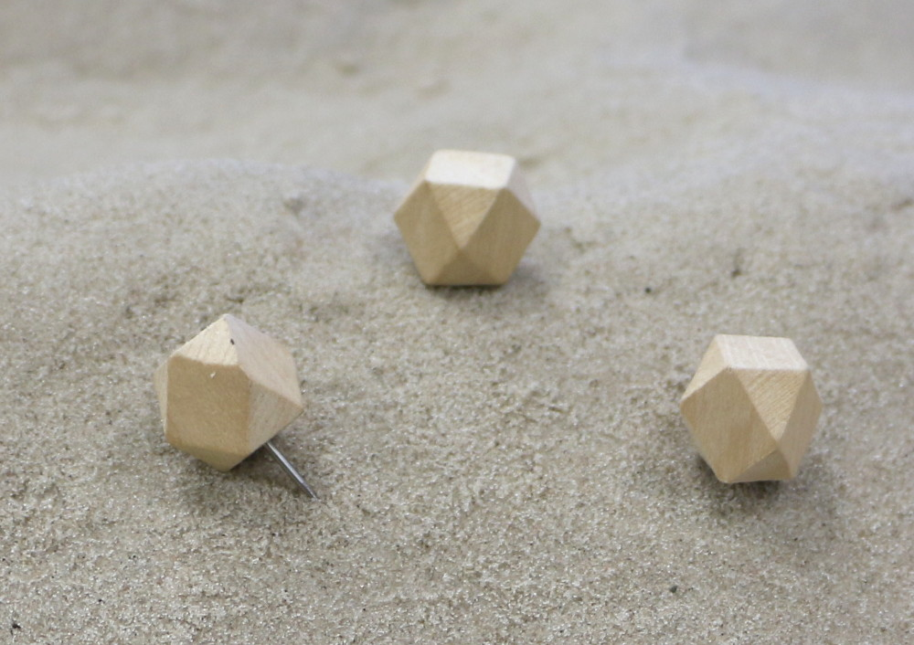 Wooden objects
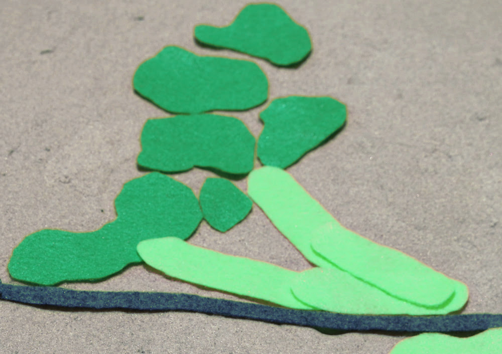 Colored textile
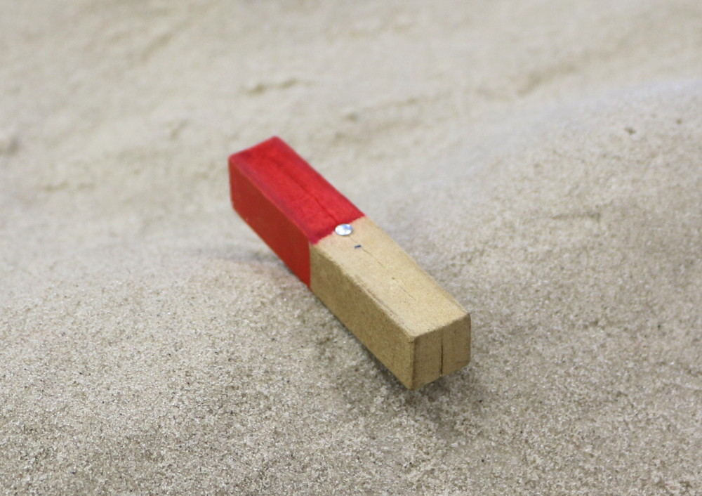 Colored objects
Metal coating
Features
Designing the landform
Features
Designing patch-type objects
Features
Designing linear features
Features
Controlling viewpoints
Features
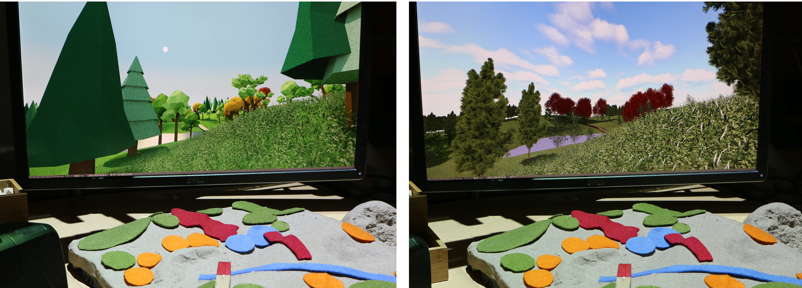 low-poly realtime rendering high-poly realtime rendering
Features
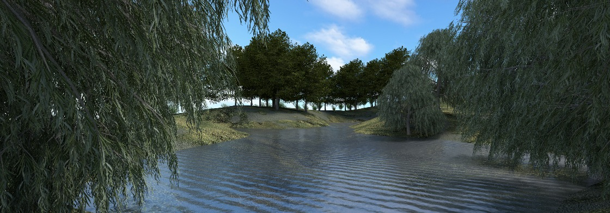 realtime photorealistic rendering
Hardware setup
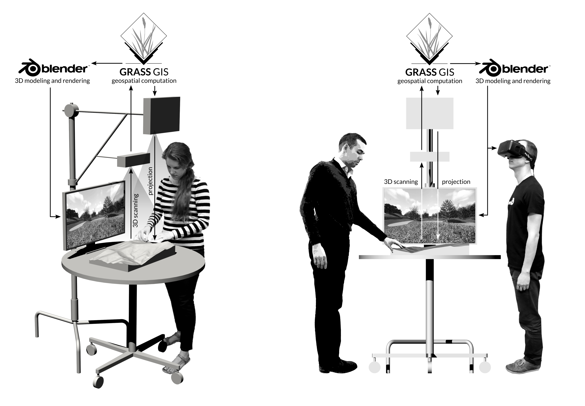
Hardware setup github page
Software architecture

Blender Plugin

Immersion
Education
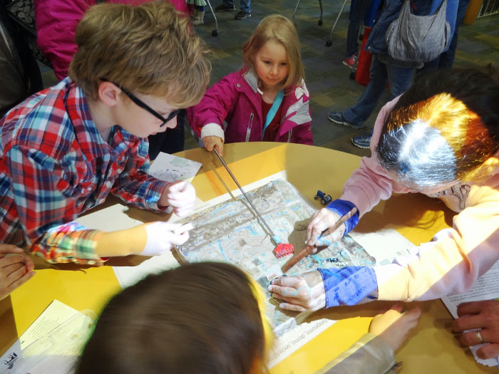 GAPS project K-12
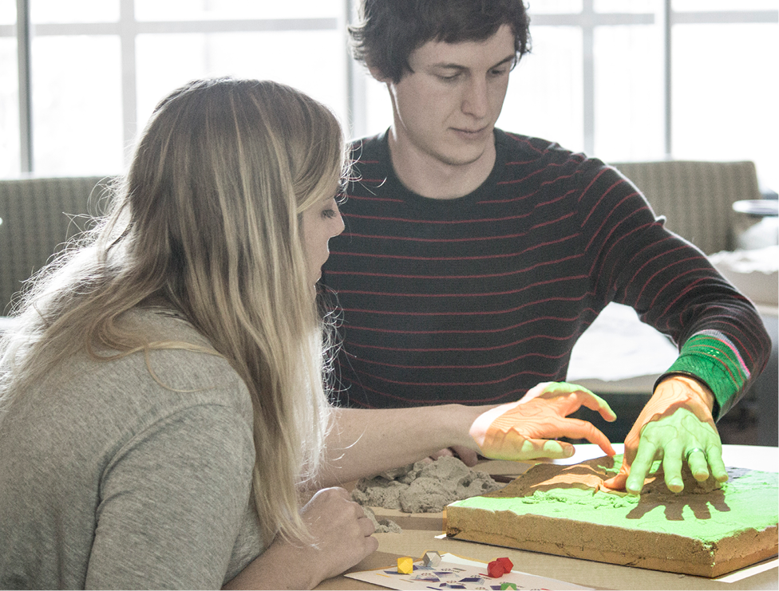 Graduate course: Spatial thinking
Water Flow
| flowpath (r.drain) | channeling (r.sim.water) | ponding (r.fill.dir) |
Serious games: coastal flooding


Save houses from coastal flooding by building coastal defenses
Structured problem-solving with rules, challenging objectives, and scoring
Sanitation Education in Rural India
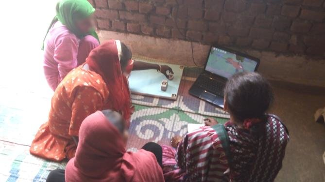
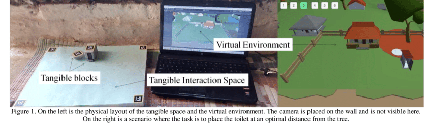 Source: Radhakrishnan, Unnikrishnan & Rao, Bhavani. (2018). Tangible User Interface for Sanitation Education in Rural India : Design and Preliminary Observations
From design to product
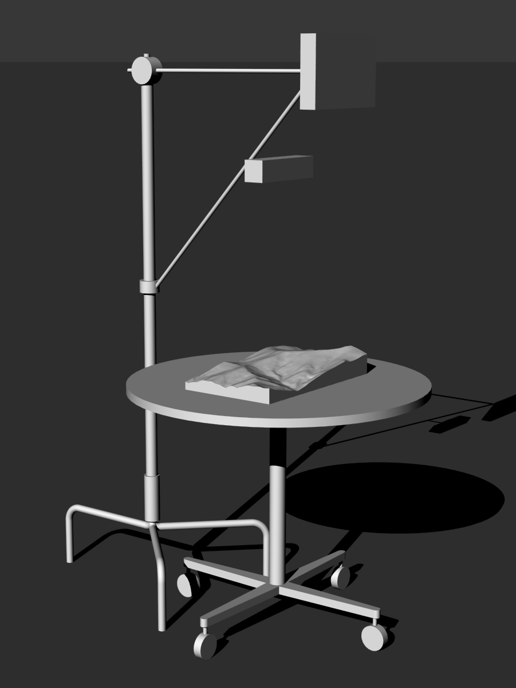 Portable setup
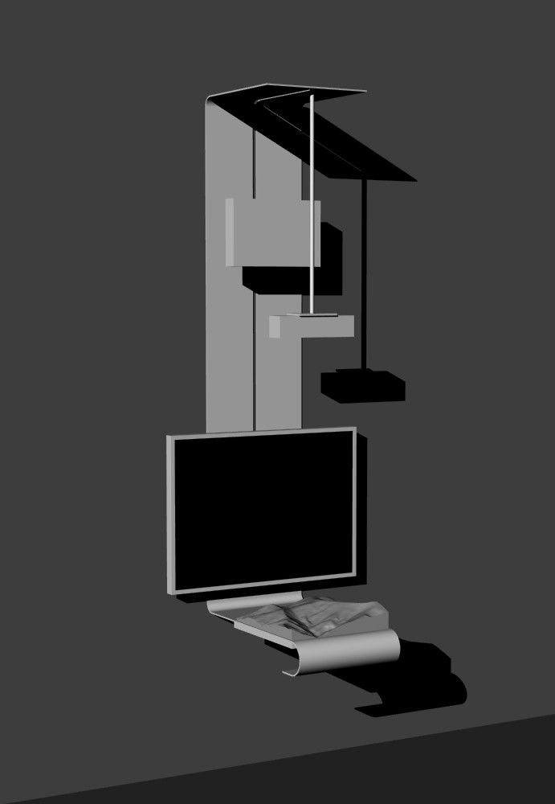 Wall-mounted setup
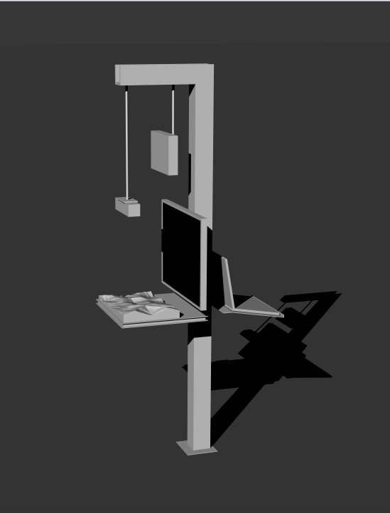 Floor-mounted setup
VRscapes : A tool for quantitative design research in VR environment

Code and instructions available at Github page
Powered by Worldviz
Human response data
| On-screen Survey | Feature selection |
Head-tracking
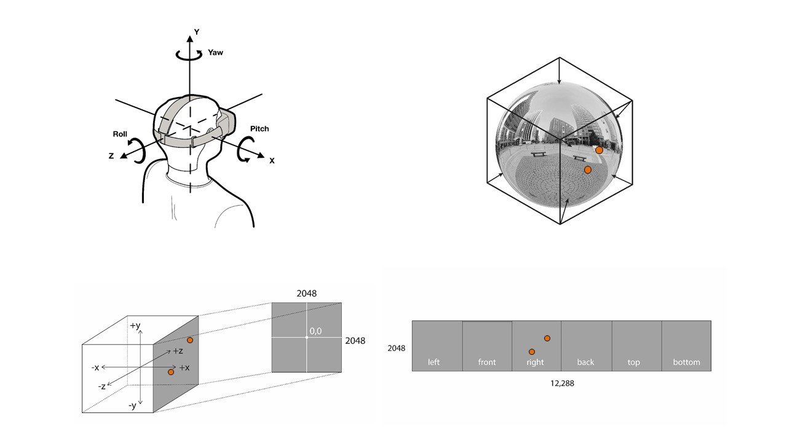
Head-tracking

Points mapped onto the VR image

Heatmaps of the feature preference (50 participants)
Features
- Experiment design: between and whithin subject
- Stumuli type: 360 Image, 360 Video, 3D simulated env
- Number of stimuli and presentation method: randomized, ordered
- Warmup scenes
- Presentation duration
- Survey items and randomization
Resources
- Tangible landscape: Github | Website | Wiki
- VRscape: Github
- Papers:
- Tangible Immersion for ecological design Proceedings of ACADIA 2017, MIT Media Lab, Cambridge, MA.
- Experimental research with VR. Journal of envioronmental psychology.
- Immersive Tangible Geospatial Modeling. Proceedings of ACM SIGSPATIAL 2016, San fransisco, CA.
- Tangible Landscape: A Hands-on Method for Teaching Terrain Analysis Proccedings of ACM SIGCHI. 2018, Montreal, CA.
- Books:
- Design portfolio
- Online tutorials